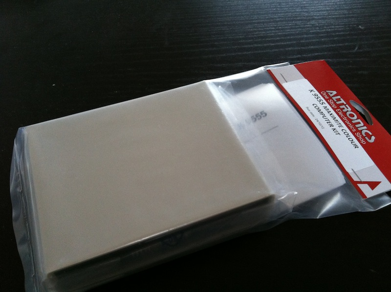
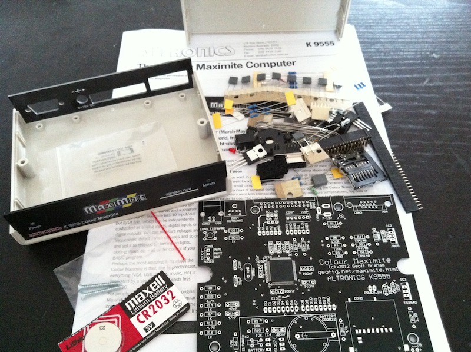
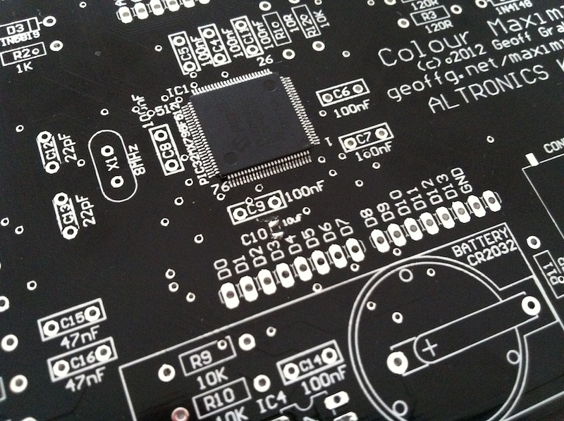
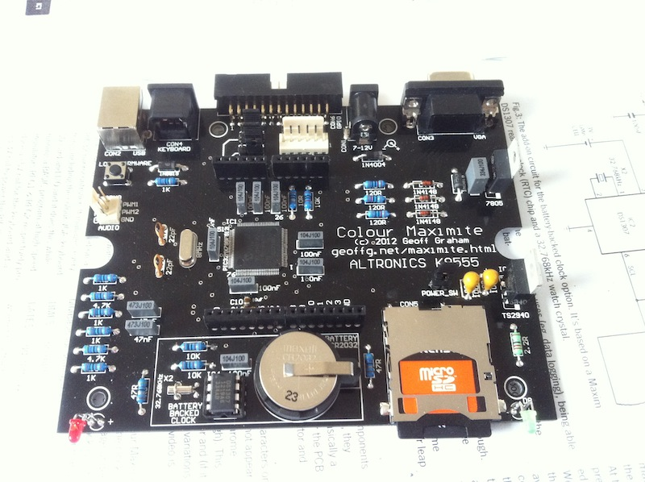
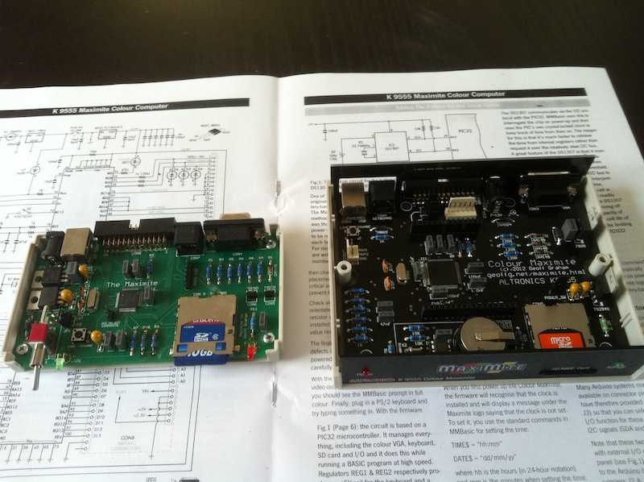

The Colour Maximite microcomputer
At the moment, the Maximite project is my favorite one among modern homebrew microcomputers. Having assembled its previous, black-and-white version, I run RetroBSD on it, and even ported my emulator of the classic 8-bit microcomputer from the eightieth called Radio-86RK. To me, the main advantage of Maximite is its completeness as a project. In fact, design of Maximite is quite simple because PIC32, the heart of this microcomputer, does almost everything. But the Maximite project is not only a bare idea or schematic, it includes the board, the case, and, of course, software – MMBasic. This is an advanced dialect of BASIC giving access to all features of Maximite, all its peripherals. In the interview the author of Maximite, Geoff Graham, tells how he was almost forced to get this project to such complete stage.
Recently Geoff has released a new, updated colour version modification having a few extra features along with the colour (new and improved features are marked with the asterisk):
- PS/2 keyboard
- VGA output with eight colours (480x432 or 240x216) (*)
- monochrome Composite Video output
- synthesised music and sound effects (*)
- battery backed real time clock (*)
- 20 external I/O lines on the back panel
- Arduino compatible connector (*)
- SD card for storing programs and files (up to 32GB)
- USB connectivity as a terminal or for file transfer
- protocols including Serial, I2C, SPI and 1-wire
- dual-channel PWM analog output (*)
- firmware upgrades via USB
- special commands for animated games
MMBasic allows to take full advantage of all these features. It is even possible implementing the PIC32 timer interrupt routines directly in BASIC.
As previously I have ordered the new Maximite Kit from Altronics.


There are no on-surface planar elements which makes the life of soldering laymans like me much easier. There is only one planar capacitor (C10) for some reason. It is quite small, so proper soldering it took me some time to avoid shortening on the board.

All done.



The Original and Colour Maximite.



In general, the kit from Altronics is very high quality. Recommended.
This is what MMBasic allows a user to do with colours.

Well, no colours though, but just classics.

As the author explains, generating colours requires the 100-pin version of PIC32 with three SPI channels. Obviously, it also requires three times much work processing the colour information. Because the crystal still works on the same frequency as previously, 80MHz, the colour Maximite works a bit slower than its black-and-white predecessor. But along with the firmware providing colours, there is a black-and-white version of MMBasic for the new Maximite having all new features except the colour video, so it works with the same speed as the original Maximite.
Well, as previously I have a lot of fun using Maximite, and strongly recommend it if you are up building a nice powerful microcomputer in a few hours.
Disclaimer